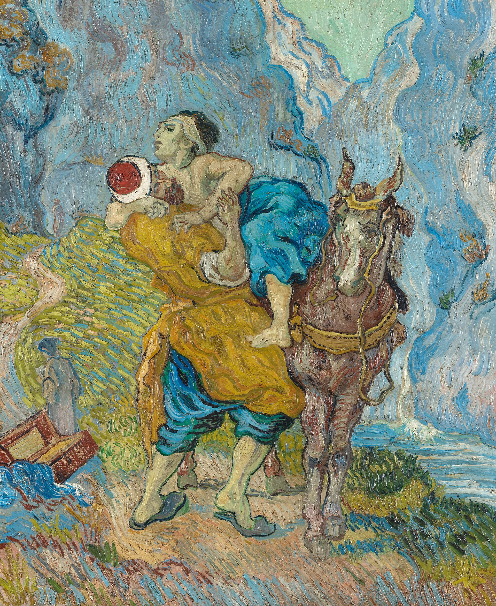
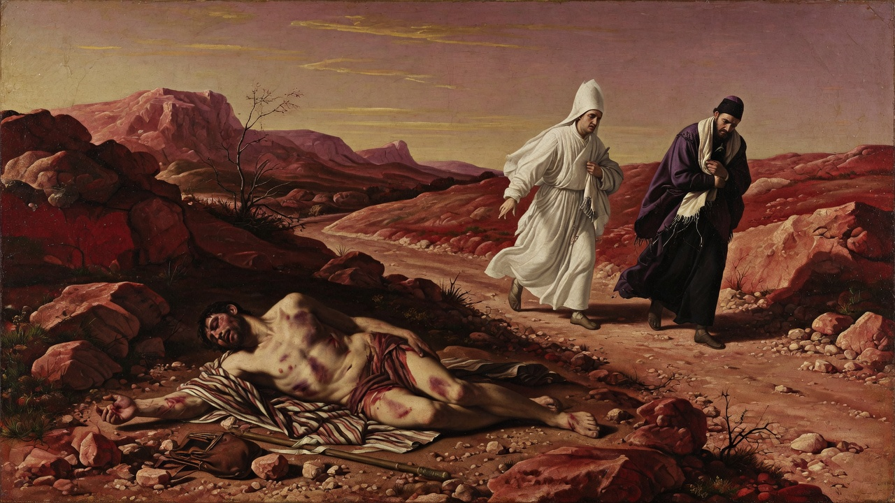
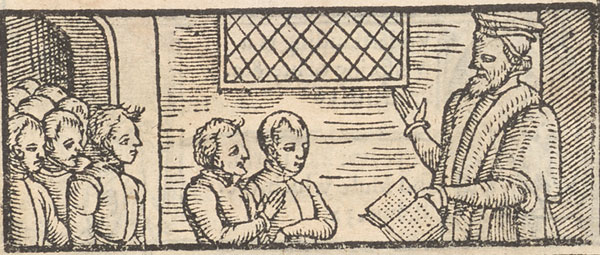

好撒马利亚人的比喻（路加福音10:25-37）

- 主题： 从自义的提问，到怜悯的行动
- 经文主线： “我该做什么才可以承受永生？” → “谁是我的邻舍？” → “你去照样行吧。”
- 比喻的本意： “邻舍”遍及每一个人；只要对方是人，共同的人性已经足够（加尔文）
- 耶稣揭露我们限制爱的自义，呼召我们成为有需要之人的邻舍；基督先赐下的怜悯，是我们回应这个呼召的根基
引言：我们为什么想界定“邻舍”？
- 当别人需要帮助时，我们是否也会先问：“这与我有什么关系？”“我有责任帮助他吗？”
- 律法师向耶稣提出两个问题：“我该做什么才可以承受永生？”和“谁是我的邻舍？”
- 这两个问题把我们带到信仰的核心：我们如何面对神的要求，又如何对待眼前有需要的人？
- 耶稣没有先列出哪些人值得帮助，而是讲述一个有人受伤的故事
- 读： 路加福音10:25-37
第一部分：自义的心（10:25-29）
- 律法师起来“试探”耶稣，问：“夫子！我该做什么才可以承受永生？”（路10:25）
- 律法的总纲：尽心、尽性、尽力、尽意爱主你的神，并爱邻舍如同自己（路10:27；申6:5；利19:18）
- 耶稣的回应： “你回答的是；你这样行，就必得永生。”（路10:28）这呼应了“人若遵行，就必因此活着”的律法要求（利18:5）
- 问题不只在于能否说出正确答案，也在于是否真正照着神的要求去爱
- 加尔文： 当时通行的裁决是“邻舍只等于朋友”。若耶稣直接下定义，律法师绝不会承认邻舍包括所有人；所以耶稣用比喻，把答案从他口中引出来，好叫他定自己的罪
律法的镜子：为什么还要问“谁是我的邻舍”？
- 律法师“要显明自己有理”，于是问：“谁是我的邻舍？”（路10:29）
- 自义与骄傲： 人容易借界定爱的对象来证明自己有理；骄傲使人不肯把别人当作平等，也不肯尽自己亏欠他们的本分
- 律法的本意： 爱每一个人如同自己；文士却把邻舍限于朋友，好逃避慈爱的试验
- 律法显罪的功用： 从整本圣经的教导来看，律法使人知罪，显明堕落的人不能靠行为在神面前称义（罗3:20；加3:10-12、24）
- 《海德堡要理问答》第4-5问把爱神爱人的要求，与人不能完全遵守的现实并列，帮助我们省察自己
- 过渡： 律法师想知道爱的范围到哪里为止；耶稣用一个故事，把答案从他口中引出来
第二部分：看见需要，谁愿意靠近？（10:30-35）
- 有一个人从耶路撒冷下耶利哥，落在强盗手中，被剥去衣裳、打个半死，丢在路旁（路10:30）
- 道路背景： 耶路撒冷至耶利哥约27公里，海拔落差约1000米；这段山路的背景，让听众容易理解旅途中的危险
- 叙事焦点： 经文没有说明伤者的族群、地位或品格，却清楚说明他急需帮助
- 故事接下来让我们看见：面对同一个人的需要，不同的人作出了怎样的回应？
祭司与利未人：看见，却从那边过去

- 祭司看见受伤的人，就从那边过去；利未人来到那里，看见他，也照样离开（路10:31-32）
- 这两个人都与宗教服事有关，但他们的身份没有转化为对伤者的怜悯
- 经文的留白： 耶稣没有说明他们绕过的具体原因；担心礼仪不洁、害怕危险或赶时间，都只能作为可能的解释，不能当作经文已经交代的事实
- 省察： 我们是否也会用宗教责任、忙碌或自我保护，来回避眼前爱邻舍的责任？
- 圣经知识与宗教身份，应当在公义、怜悯与信实的生活中显明出来（太23:23）
撒马利亚人：动了慈心，付上代价
- 一个撒马利亚人行路来到那里，看见伤者，就“动了慈心”（路10:33）
- 人物背景： 犹太人与撒马利亚人之间有长期的族群与宗教隔阂；约4:9也提到双方的隔阂。耶稣让被轻视的外人成为施怜悯的人，使故事格外有冲击力
- 他上前用油和酒处理伤处，包裹伤口，扶伤者骑上自己的牲口，带到店里照应（路10:34）
- 次日，他拿出二钱银子交给店主，托付店主照应，并应许回来偿还额外的费用（路10:35）
- 仇敌的怜悯： 一个仇敌向犹太人显出慈心，显明人被造是为了人；神把所有人绑在一起，为要彼此扶助
- 付代价的爱： 他的怜悯涉及时间、金钱、精力和持续的照顾；“动了慈心”落实为具体行动
第三部分：从界定邻舍，到成为邻舍（10:36-37）
- 耶稣问：“你想，这三个人哪一个是落在强盗手中的邻舍呢？”（路10:36）
- 律法师回答：“是怜悯他的。”耶稣说：“你去照样行吧。”（路10:37）
- 问题的翻转： 律法师问“谁是我的邻舍？”，耶稣让他辨认“谁成为受伤之人的邻舍？”
- 比喻的本意： “邻舍”遍及每一个人；只要对方是人，共同的人性已经足够，我们不能把它涂抹掉
- 基督的方法： 文士主张邻舍只等于朋友；若直接下定义，律法师绝不会承认。基督把答案从他口中引出来，好叫他定自己的罪
- 最陌生的人也是邻舍： 神把所有人绑在一起，为要彼此扶助；爱的责任不限于朋友、亲戚或自己的群体
- 谁作了邻舍？ “是怜悯他的”指出故事中谁实际向伤者施了怜悯；这不表示只有帮助过我的人才算我的邻舍，也不表示我只须爱对我好的人
福音连接：我们如何活出这样的爱？
- 称义的根基： 人得救是本乎恩，也因着信，不是出于行为；善行是神为蒙恩者所预备的生活（弗2:8-10）
- 律法与福音： 律法显明我们的罪与责任；福音宣告基督为罪人所成就的救恩。
- 在基督里的自由： 当帮助别人不再是换取永生的条件，我们才能因对方需要帮助而去爱，而不是借对方证明自己的义
- 律法作为圣徒指南： 对蒙恩的人，爱神爱人的诫命成为感恩生活的规范（罗12:1）；我们仍有罪与亏欠，救恩的确据始终建立在基督身上，不能转而依赖自己爱得够不够
- 解经层次： 路10:25-37的本意是揭露自义、显明邻舍遍及每一个人，并呼召人施怜悯；因信称义与圣灵更新的说明，是结合整本圣经所作的福音连接，不是把比喻改写成救恩寓意
基督的怜悯：我们爱，因为祂先爱我们

- 完全守全律法的基督： 唯有耶稣完全爱神、爱邻舍；我们的盼望建立在祂的公义与救赎之上（太5:17；罗3:20-24）
- 俯就罪人的救主： 当我们还软弱、作罪人、与神为敌的时候，基督已经为我们舍命，使我们与神和好（罗5:6-10）
- 爱的源头： “我们爱，因为神先爱我们。”（约壹4:19）这是福音的连接，不是把比喻里的人物一一对号入座
- 解经原则： 对圣经当有更深的敬畏，不可给它的本意化妆；把撒马利亚人解作基督、或把伤者解作基督，都不是本比喻的意思
- 蒙了基督怜悯的人，受呼召靠圣灵向别人施怜悯
从称义到感恩：恩典如何结出善行
- 第60-61问： 我们在神面前称义，单单信靠基督
- 第86问： 基督用宝血救赎我们，也用圣灵更新我们，使我们以整个生命感恩、荣耀神，并以敬虔生活引领邻舍归向基督
- 善行的位置： 爱邻舍不是赚取称义的功劳，却是信心与感恩应当结出的果子（弗2:8-10）
- 认识自己的罪，使我们放下道德优越感；认识基督的恩典，使我们愿意走近别人的需要
- 过渡： 既然我们已经蒙了怜悯，今天可以怎样回应“你去照样行吧”？
讨论问题

- 律法师已经知道爱神爱人的诫命，为什么还要问“谁是我的邻舍”？“要显明自己有理”揭露了怎样的心态？耶稣为何不直接下定义，而要把答案从他口中引出来？
- 加尔文说“只要对方是人，就是邻舍”。这与“撒马利亚人向伤者作了邻舍”分别回答什么问题？我们今天会用哪些理由，把某些人从邻舍的范围里划出去？
- 为什么加尔文拒绝把撒马利亚人解作基督、把伤者解作基督、把油酒解作悔改与恩典？这与“唯有基督完全爱神爱人，我们不能靠『去照样行』称义，我们爱因为祂先爱我们”有何分别？本周你愿意为谁采取一项具体行动？
结论：你去照样行吧
- 第一个问题： “我该做什么才可以承受永生？”使我们面对神爱神爱人的要求，也看见自己不能靠行为称义
- 第二个问题： “谁是我的邻舍？”显出人限制爱的倾向；邻舍遍及每一个人，最陌生的人也是邻舍
- 最后的呼召： “你去照样行吧。”这是真实的命令，却不能使人称义；我们因基督的恩典蒙拯救，也蒙召靠圣灵活出有代价的爱
- 唯有基督完全爱了神和邻舍；我们爱，因为祂先爱我们。愿我们这群蒙恩的罪人，也走近有需要的人，成为他们的邻舍
应用：今天，我要成为谁的邻舍？
- 放下自义： 承认自己无法靠行为或宗教仪式满足神完全公义的要求，唯独倚靠基督,并付诸行动；
References
- 《圣经》（和合本）：路加福音10:25-37；利未记18:5；19:18；申命记6:5；马太福音5:17；23:23；约翰福音4:9；5:25；罗马书3:20-24；5:6-10；12:1；加拉太书3:10-12、24；以弗所书2:8-10；约翰一书4:19。
- 《海德堡要理问答》（1563）第4-5问、第60-61问、第86问；本讲义采用摘要表述。
- Ligonier Ministries, “The Parable of the Good Samaritan”（2016年3月28日）：强调律法揭露自义，以及邻舍不受族群或信仰界限限制。[https://learn.ligonier.org/devotionals/parable-good-samaritan](https://learn.ligonier.org/devotionals/parable-good-samaritan)
- 约翰·加尔文，《和谐福音书注释》（*Commentary on a Harmony of the Evangelists, Matthew, Mark, and Luke*），论路加福音10:30。英译 William Pringle（Calvin Translation Society）。本课以此为比喻本意的主要改革宗依据： 邻舍遍及每一个人；律法的本意是爱每一个人如同自己；基督要律法师自己定罪；仇敌的怜悯显明人被造是为了人；并拒绝把本比喻寓意化为自由意志、基督＝撒马利亚人、或教会＝店主。https://www.ccel.org/ccel/calvin/calcom33.ii.vii.html
- 其他参考资料、历史背景补充与解经说明，见 [good-samaritan-appendix.md](good-samaritan-appendix.md)。